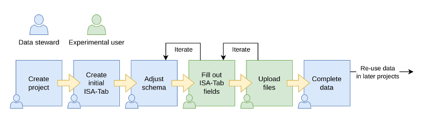

Content from Preamble to Data Management Plan
Last updated on 2024-10-08 | Edit this page
Estimated time: 0 minutes
Overview
Questions
- What is Metadata?
- How to describe metadata?
- What is the difference between data and metadata?
Objectives
- Defining data management plan.
- Understanding its importance applied to OMICs experiments.
Introduction
In this lesson, we will learn about metadata and its importance. We will learn about the different types of metadata and how it is used to provide context and meaning to data. We will also learn about the importance of metadata standardization and how it can help to improve data management and data analysis. Finally, we will learn about the importance of metadata in OMICs experiments and how it can help to improve the reproducibility and reliability of research results.
What is Metadata?
Metadata is data that provides information about other data. It is an essential component of any data analysis pipeline. It is used to describe the content, quality, condition, and other characteristics of data. Metadata is used to provide context and meaning to data. It is used to help users understand the data and to help them make informed decisions about how to use it.
Data vs. Metadata
Data is the raw information that is collected and analyzed in a research study. It is the information that is used to answer research questions and to make decisions. Metadata is the information that describes the data. It is the information that provides context and meaning to the data. It is used to help users understand the data and to help them make informed decisions about how to use it.
An everyday analogy is digital photography. Every time you take a photo with a digital camera, a range of “behind-the-scenes” information is saved along with the image data. This is known as metadata, and it can include details of the camera, lens, and shooting settings used, plus optional information about the photographer, location and more. Similarly, every experiment generates data, and contains metadata.
An experimental protocol, for example, is considered part of the metadata of an experiment. There are different levels of metadata, which will be discussed in more detail once we discuss the ISA (Investigation, Study and Assay) framework.
Data management plan
A data management plan (DMP) is a document that outlines how data will be handled throughout a research project. It explains how to collect, organize, store, and share data, as well as ways to make sure that data is safe and meets legal and ethical standards. The DMP aims to enhance the accessibility, usability, and reproducibility of the data, as detailed below.
Goals of data management plan
Here we define the goals of a data management plan in context to the FAIR framework:
- Automated deposition of data and metadata to public repositories (findability).
- Ensure that data is stored in a format that is easily accessible and usable (accessibility).
- Define consistent terminologies and controlled vocabularies to represent the data (interoperability).
- Ensure that data is stored in a secure and reliable manner (reusability).
Roles and responsibilities
- Data owners: Persons responsible for generating the data and metadata.
- Data managers: The person responsible for managing the data and metadata.
- Data users: The person responsible for using the data and metadata to answer research questions and make decisions.
Benefits of Data Management and Metadata Standardization
- Increase impact and visibility of research.
- Assigns clear responsibilities for data management tasks such as storage, backup, and controlled sharing.
- Standardizes data and metadata to facilitate collaboration using consistent terminologies and controlled vocabularies.
- Promotes collaboration within the CRC and with external partners, supporting method development and data reuse.
- Ensures compliance with funder requirements.
- Facilitates efficient interoperability among infrastructure teams.
- Enable audit trail of data and metadata changes.
Metadata management plan and FAIR framewok
In this document we outline the strategies and procedures for managing high-throughput data within the CRC1550’s integrated infrastructure. The CRC-INF plan is centered on the consolidation of interfaces, procedures, and interoperability standards (Aim 1) and the development of generic bioinformatics workflows for the standard analysis of multimodal data sets from CRC projects (Aim 2). The primary objective of the data management team is to ensure the efficient management of unprocessed and processed data produced by high-throughput experiments by providing services (and interfaces) to manage and store data and metadata.

There are three working groups:
The BioBanking working group is responsible for the collection, storage, and management of biological samples.
The Data Management working group.
The bioinformatics working group is responsible for the analysis of high-throughput data.
This course is focused on the Data Management working group.
Findability
Metadata and data should be easily discoverable by both humans and machines. To ensure findability, each data object must have a unique and persistent identifier: - Data objects must be re-findable at any time, with an emphasis on maintaining persistent metadata. - Each data object should include basic machine-readable metadata to differentiate it from other objects. - Identifiers for concepts used in data objects must be unique and persistent.
Accessibility
After finding data, it’s crucial to understand the conditions for accessing them. Data should be accessible to both machines and humans:
- With proper authorization.
- Via a well-defined protocol.
This ensures that both machines and humans can determine the actual accessibility of each data object.
Interoperability
Data needs to be processed and, often, be integrated with other data sets and be compatible with various applications or workflows for analysis, storage, and processing.
Data objects are interoperable if: - The (meta)data is machine-actionable. - The (meta)data formats use shared vocabularies or ontologies. - The (meta)data within the data object is both syntactically parsable and semantically machine-accessible.
Reusability
The ultimate goal is to optimize the reuse of data, requiring that metadata and data be well-described for use, replication, and combination in various settings.
For data objects to be reusable, they must:
- Comply with principles of findability, accessibility, and interoperability.
- Be sufficiently well-described and rich in metadata to allow automatic linking or integration with relevant data sources, with minimal human effort.
- Include rich metadata and provenance information for proper citation of published data objects and their sources.
Conclusions
Data and metadata standardization and description involves establishing and applying rules and guidelines for creating, managing, and using metadata. This process ensures that metadata is reliable and helps users more effectively find, access, and utilize data.
Key Points
- Data management plan execution enables data FAIRification.
- Metadata standardization is critical for reliable results and reproducibility.
- There are three roles in data management: data owners, managers, and users.
- Data management and metadata standardization provide numerous benefits that enhance the overall quality, usability, and impact of research data.
Content from An introduction to bioinformatics file formats.
Last updated on 2024-10-08 | Edit this page
Estimated time: 0 minutes
Overview
Questions
- What are the different files formats used in bioinformatics?
- Differences between raw and processed data sets.
Objectives
- Introduce the idea of OMICs experiments.
- Familiarize with commonly used file formats and concepts.
- Understanding the multilayered nature of metadata from OMICs experiments.
Introduction
OMICs technologies provide unbiased measurements of molecular entities in biological samples. These measurements allow for a comprehensive exploration of functions and association of such entities. System biology is a branch of biology that aims to comprehend biological systems in their entirety by the application of OMICs methods.
CRC1550 focus
Within the CRC1550, the data management plan currently focuses on animal experiments, and the data generated from specific OMICs experiments. The data management plan is a living document that will be updated as the project progresses. Currently, we don’t consider data human data from patient samples, such as clinical data, or imaging data, which are current out of the scope of this material.
OMICs is a collective term for a group of technologies that allow for the comprehensive analysis of biological molecules. These technologies include genomics, transcriptomics, proteomics, metabolomics, and lipidomics. Each of these technologies provides a unique perspective on the molecular composition of a biological sample, and together they allow for a comprehensive exploration of the functions and associations of biological molecules.
General definition
- Genomics: Study of an organism’s entire genome, exome or selected regions, offering insights into genetic variations. When associated with disease phenotype or clinical data can be implicated on health and disease.
- Transcriptomics: Focuses on the transcriptome, the complete set of RNA transcripts produced by the genome, under specific circumstances or in a specific cell.
- Proteomics: Examines the proteome, the entire set of proteins produced or modified by an organism, revealing functions and pathways.
- Metabolomics: Involves the study of metabolites, providing a snapshot of the physiological condition of a cell or organism.
- Lipidomics: A complete lipid profile within a cell, tissue, or organism, allowing the study of their roles in cellular processes.
File formats
There are a multitude of file formats used in bioinformatics, each with its specific use case. Some of the most commonly used file formats include:
FASTQ format: a text-based format for storing both oligonucleotide sequences and its corresponding quality scores. Obtained after base calling procedure.
FASTQ file format
For bioinformatics workflow, the FASTQ format is often the initial step. This file format stores “reads”, or nucleotide sequences, along with their quality scores. Each sequence in a FASTQ file is represented by four lines: a header with a ‘@’ symbol followed by an identifier and optional description, the nucleotide sequence itself, a separator line starting with a ‘+’, and the quality scores encoded as ASCII characters. This structure allows for efficient storage and analysis of sequencing data, essential for tasks like genome assembly and analysis. For more detailed information, please visit the Wikipedia page on FASTQ format.
VCF/BCF: Stores genetic variation data, such as single nucleotide polymorphisms (SNPs) and insertions/deletions (indels).
SAM/BAM/CRAM files: These are used to store sequence alignment data, and are used to represent the alignment of reads to a reference genome. SAM is a text-based format, while BAM is a binary version of the same format. CRAM is a compressed version of the BAM format.
PRIDE XML, mzIdentML, mzTab, and mzML: These file formats are used to store, process, and visualize mass spectrometry-based proteomics data deposited in the PRIDE Archive.
- PRIDE XML: The internal data format and submission format for the PRIDE database, capturing comprehensive metadata and experimental details.
- mzIdentML: A standardized format for reporting peptide and protein identifications, including search results and confidence metrics.
- mzTab: A simpler, tab-delimited format for reporting identifications, quantification results, and metadata, designed for ease of use and flexibility.
- mzML: An XML-based open standard for storing raw mass spectrometry data, encompassing detailed spectral information and metadata.
Types of file formats
Proprietary formats: high-throughput machine such as Illumina, Nanopore, produce files before base calling. These files are in the form of binary files, and are not human-readable and depend on vendor-specific methods for signal processing.
Note that various proprietary formats are used for raw proteomics data depending on the equipment vendor.
Processed file formats: formats whom data has been processed and are ready for downstream analysis. These formats are often tabular, and can be easily imported into R or Python for further analysis. Examples include:
Tabular formats: csv, xlsx, tsv, and others.
RData: R-specific binary format for storing R objects.
HDF5: A data model, library, and file format for storing and managing large and complex data.
BED, GFF, and GTF: These are used to store genomic feature or annotations, such as gene locations, and structure.
The scope of this lesson is to give an overview of file formats used in bioinformatics. It is important to understand that the different files a specific purpose, can be vendor-specific and that the choice of file format can have a significant impact on the downstream analysis of the data. For example, use of legacy vendor-specific format can limit the use of the data in modern bioinformatics pipelines, as proprietary programs may disappear. In general, it’s good practice to use open-source file formats.
Raw vs processed data
As a general rule of thumb, one can consider the raw data as the data that comes directly from the sequencing machine, and the processed data any data set derived from the raw data. The raw data is often in a format that is not human-readable, and requires specialized software to process. This definition may change depending on context.
Challenges in OMICs data:
There are many challenges involved in the use of OMICs datasets.
- Data storage: OMICs data sets can be large, and require robust data storage and backup solutions. This is especially true for raw sequencing data, which can be many gigabytes in size. We expect more than 20 terabytes of high-throughput data to be produce per year.
- Data analysis: OMICs data sets are complex, and require specialized methods for analysis.
- Standardization: As there are many file formats, there are many data standards and protocols used in OMICs research. This lack of standardization make it difficult to compare data between different centres.
- Data sharing: OMICs data sets are required to be shared upon publication.
All the challenges can be mitigated through the use of the meta data managing plan. Metadata is essential for understanding the context of the data, and is used to help find and interpret the data. In the context of OMICs data, metadata can include information about the sample donor, sample, the experimental conditions, the data collection methods, protocols and the data analysis methods. Results files can also contain metadata describing the processing steps used on the raw files. Metadata is essential for reproducibility, as it allows others to understand and replicate the results of experiments.
Key Points
- OMICs technologies are crucial for a holistic understanding of biological systems.
- Common file formats in bioinformatics serve specific purposes and require specialized toolsets.
- Metadata plays a critical role in contextualizing and modeling OMICs data.
Content from FAIR Principles in OMICs Research
Last updated on 2024-10-08 | Edit this page
Estimated time: 20 minutes
Overview
Questions
- What actions can we take adhere to FAIR framework?
Objectives
- Understand the FAIR framework applied to OMICs research
- Discuss solution the INF data management team can provide so the project adhere to the FAIR framework
Reminder of FAIR framework
This chapter aims to give a deep dive on FAIR framework.
- Findable: Metadata helps in uniquely identifying data for easy discovery.
- Accessible: Metadata includes information on how data can be accessed.
- Interoperable: Standardized metadata ensures that data can be integrated with other datasets.
- Reusable: Metadata provides the information necessary for data to be reused effectively, including the conditions under which it can be reused.
Findable
The “Findable” aspect of the FAIR principles emphasizes the need for data to be easily located and identified. This is the first step in ensuring that data can be used and reused effectively. Metadata plays a crucial role in making data findable by providing information about the data, such as its title, publication, author, and description. This information helps users to locate and identify the data they need for their research. Or describing sample location (left-ventricle vs. right ventricle), library preparation type (Poly-A enrichment vs. Ribo depletion).
Another important aspect for findability is the use of persistent identifier. One every day aspect is nomenclature used for genes or proteins in manuscripts. While the use of nomenclature standards advanced, use of common names can lead to ambiguities or confusion. In that case, the use of persistent identifier, such as the Ensembl’s Stable IDs or UniProt accession numbers are preferred. The Digital Object identifier (DOI) is used to make data, software, and other research outputs easily citable and trackable.
Metadata can also facilitate data discovery. For example, metadata can be used on
Accessible
Making data accessible to collaborators and the public increases its impact. Our INF aims to facilitate and automatize the limited or public distribution of data sets. The critical point is establishing user access with granularity.
The Member Roles in SODAR are structured to provide varying levels of access and functionality within projects. Each user can hold only one role at a time within a category or project, with “project” serving as a generic term encompassing both categories and specific projects. The roles, listed in descending order of rights and functionality, include:
Project Owner: Holds full access to project data and functionality, with the ability to assign roles, including delegates. They can transfer ownership to another user.
Project Delegate: Possesses full access to project data and functionality, except for modifying owner or delegate roles. This role can only be assigned by a project owner.
Project Contributor: Granted access to create and modify data within a project, such as uploading files and editing sample sheets, with certain limitations. They cannot modify project metadata or user roles.
Project Guest: Limited to read-only access to project data.
Project Finder: Exclusive to users in categories, allowing them to view child categories and projects, along with member lists, without accessing project data or apps. This role is useful for staff members who need an overview of the category and project structure.
Role inheritance is implemented, with roles inherited from parent categories. These inherited roles can be promoted for the current category or project but cannot be demoted. Inherited roles are denoted in the member list, indicating the category from which the role is inherited.
Additionally, each project must have one local owner who is not inherited.
Moreover, standardized metadata can facilitate data users to find your data set on specialized search engines, such as Sequence Read Archive, European Nucleotide Archive, and Gene Expression Omnibus, or other engines, such as the METASra or the SRA explorer. The more data users find your data set, the more likely it receives citations.
Interoperable
Data interoperability refers to the ability of different systems, organizations, and applications to access, exchange, and use data seamlessly and effectively. It ensures that data from diverse sources can be integrated and utilized cohesively, regardless of the differences in their formats, structures, or origins. For data to be interoperable, it must meet the following key criteria:
- Machine-readable.
- Standardized formats and processing steps.
- Using common vocabularies and ontologies.
Adhering to these criteria facilitates data use and integration, as well further analysis, such meta analysis or database inclusion. The main action here is selecting a common ontology to describe experiments. Please check this resource to see how ontologies work: ols4 left ventricle query.

Reusable
Data set reusability is the final goal of the FAIR framework. Reusability requires adhering to four key concepts:
- The data complies with the Findable, Accessible and Interoperable principles.
- Data and metadata can be validated.
- Data permission and licensing.
Data validation
Another important concept is providing standardized file formats and validating such files. Using MD5 checksums for file sharing and validation is important because it ensures data integrity. Before a file is shared, an MD5 checksum should be generated, which is a unique hash value representing the file’s content. The recipient can generate their own MD5 checksum for the received file and compare it with the original checksum. If the values match, it confirms that the file has not been altered or corrupted during transmission, ensuring the file’s integrity and authenticity.
Here is an example of how to test a file checksum manually:
BASH
echo "this is a text file." > test_checksum.txt
cat test_checksum.txt
> this is a text file.
md5sum test_checksum.txt > test_checksum.md5
cat test_checksum.md5
> bc8a22e96d2b46f583a8c5fb055de679 test_checksum
md5sum --check test_checksum.md5
>test_checksum: OKOUTPUT
Error in running command bashMetadata validation
There are specialized tools for validating metadata. SODAR uses altamisa. SODAR user interface will display errors and warning in case of parsing errors for the metadata files.
Data licenses
Disclaimer
This section does not aim to discuss legal aspects of data sharing, but to provide an overview of the importance of data licenses. For legal advice, please consult a legal expert.
Data licenses are legal instruments that define the terms and conditions under which data can be used, shared, and distributed. They provide a framework for data users to understand their rights and obligations when using data, including the permissions granted by the data provider and any restrictions on data use.
In legal terms, data and software can only be re-used if it licensed. Data deposited to the SRA (Sequence Read Archive) is licensed under the NCBI data use policy. This license provides open access to raw sequencing data, including RNA-seq data, under the public domain license. This means the data can be freely used, modified, and shared by anyone for any purpose without restrictions.
Key Points
- The FAIR framework is central for data and metadata management.
- Data sets can be made more reusable by taking simple actions.
Content from SODAR: System for Omics Data Access and Retrieval.
Last updated on 2024-10-08 | Edit this page
Estimated time: 30 minutes
Overview
Questions
- How to use SODAR for data and metadata entry?
Objectives
- Introduces SODAR and overview of its building blocks.
- How the process for data and metadata upload works within the CRC1550-INF.
Overview
System for Omics Data Access and Retrieval (SODAR) is a specialized system designed for managing data in OMICs research projects. The platform provides researchers with a central location for navigating and coordinating data, connecting to other resources and systems. Key features of SODAR include project-based access control, modeling study design metadata, large-scale data storage, file validation, and various tools for data management. SODAR aims to address challenges faced by scientists working on OMICs studies by offering a user-friendly interface for managing multi-assay studies and organizing raw data set, metadata and results in a single place. Most end users will use SODAR via its web-based GUI, while data stewards will use the REST APIs. SODAR server runs on the Django web server, models metadata with the ISA specification, and uses iRODS for file storage. SODAR is developed by the Core Unit Bioinformatics at the Berlin Institute of Health. The software is written in Python 3 and freely available under the MIT license.
SODAR components and data workflow

SODAR server
The SODAR server is the main component of the system. It comprises several modules called Django apps, which are responsible for different tasks. Although these apps are not the utmost importance for the users, understanding the available apps allows users to understand the full potential of the system. The main apps are detailed in the GitHub repository of the project and listed below:
- Samplesheets: Modeling of study metadata in the ISA-Tab format
- Landingzones: Management of file validation and uploads into iRODS
- Irodsadmin: iRODS data administration helpers
- Irodsbackend: Backend app for iRODS queries and operations
- Irodsinfo: Display iRODS server information and create user configurations
- Ontologyaccess: Parse, store and serve ontologies for local lookup
- Taskflowbackend: Run iRODS transactions with full rollback for project and file operations
These apps are presented to end-users via the SODAR web-application:
iRODS server
iRODS stands for Integrated Rule-Oriented Data System, is the data management system that powers SODAR data and metadata management under-the-hood. Most user will not need to interact with iRODS directly. iRODS provides storage virtualization among heterogeneous file systems, meaning it allows data to be stored in different computers or external servers (‘cloud’) and still be systematic organized in terms of metadata. The usual use case is for organizing unstructured data, such OMICs experiments.
The iCAT server serves as a metadata catalog that supports large facility experimental data, linking all aspects of the research chain from proposal through to publication. It utilizes a relational database for storing metadata in the form of “triples,” consisting of an attribute field, a value field, and a unit field.
An iRODS collection is a fundamental concept in iRODS that organizes data objects into a hierarchical structure. In iRODS, collections are similar to subdirectories and are used to group related data objects together. These collections do not reference the physical storage path (i.e., where the data is stored in the file system), allowing data objects within the same collection to be stored in different physical locations. Additionally, a data object in iRODS can have multiple replicas, which are exact copies of the file stored in different locations.
IRODs server has many features that are beyond the scope of this material.
Davrods
Davrods provides access to iRODS servers using the WebDAV protocol, a similar protocol to the one used by the CardioCloud. This feature enables users to link external tools, such as Jupyter notebooks, Integrated Genome Viewer (IGV), and Galaxy tools.
SODAR naming and concepts

Web-UI
SODAR web-UI is the main interface for users to interact with the system.
Navigation Sidebar: On the left side, there’s a vertical navigation bar with various options such as “Project Overview”, and once a project is selected, “Sample Sheets”, “Landing Zones”, “Timeline,” and “Members.”
Navigation Topbar: A search bar, enable project or metadata search. Help, a link to the SODAR documentation. User menu drop-down so users access configurations and general information.
Main Panel: The bulk of the UI consists of the main panel, which changes depending on the section.
Members:
Members is a core feature for each project. This section provides an overview of user roles within a project, determining their level of access and capabilities. Users can be assigned various roles like Owner, Delegate, Contributor, Guest, and Finder, each with specific rights, from full project management to read-only access. Roles can be inherited from parent categories and can be adjusted to the needs of the current project. Owners and Delegates have the ability to add, update, or remove members and roles. Members are added through a user search function, and changes in membership are recorded in the project’s timeline. For users not registered in SODAR, invitations can be sent via email, which expire after a set duration. The system allows for the promotion of members with inherited roles, but not demotion. Each project must have one local owner, and the number of contributors and guests is unrestricted.
Detailed information are detailed on SODAR manual.
Landing Zones:
Landing zones in SODAR serve as temporary, user-specific areas within iRODS for file uploads, providing full write access to the user. Files are uploaded to these landing zones, after which SODAR performs validation and transfers them to a permanent, read-only sample data repository. The Landing Zones application facilitates the management of these uploads, accessible through the project sidebar or the SODAR home page. Should validation or upload fail, the process is reversed to allow corrections, ensuring the integrity of data in the repository.
Sample sheets:
In SODAR, sample sheets represent the metadata for study design within research projects. The Sample Sheets application is used for importing, browsing, and editing this metadata, and it allows users to access related files stored in the iRODS system. Access to the Sample Sheets app is obtained through the project sidebar or via an icon on the SODAR home page.
Time line:
The Timeline application in SODAR serves as a log that tracks project activities, such as member role assignments, file transfers from landing zones, updates to sample sheets or errors. Each recorded event on the timeline includes a timestamp, the type and origin of the event, the user who initiated it, and a detailed description with links to related objects and applications.
SODAR data workflow step-by-step usage
Figure 4. SODAR data workflow.
Login into SODAR. Then create a project https://sodar.crc1550.com/project/project/create.
Create a subproject https://sodar.crc1550.com/project/project/create/<project_uid>.
Create a sample sheet: Sample sheets > Sheet operations > Create from template and
Select ISA-Tab Template.Activate the irods server on Sample Sheet section.
-
Files will be uploaded by the data management team. These are the options:
Use <cubi-tk sodar ingest> cubi-tk sodar ingest –sodar-url
–sodar-api-token Use iRODs <iput>
Call SODAR validation to check whether the data upload was successful.
Modify or fix any entries, if required.
Creating and filling a sample sheet
- Pick
Sample Sheetson left column. - On Sheet operation, select create from template

- Select an ISA-Tab template

- Fill the form:

Note
The current templates are not fully optimized for our use-case. Fell free to reach out to the data management team if you have question, concerns or suggestions.
Standard Operating Procedure for Data and Metadata Registry with SODAR Service
The SOP is available here: https://cloud.crc1550.com/index.php/s/nW6CGRiDHPtP5KP
FAQ:
How to access iRODS:
iRODS directories can be accessed via the project pages https://sodar-server.readthedocs.io/en/latest/data_transfer_irods.html but users don’t direct acces to the iRODS server
Why <cubi-tk sodar ingest-fasq> is not working?
The cubi-tk is a command line tool that allows to interact with SODAR
server. The command cubi-tk sodar ingest-fasq because of
configuration error. Use <cubi-tk sodar ingest>. See
implementation details on cubi-tk.
Key Points
- SODAR is a user friendly data management solution that adheres to the FAIR framework.
Content from SRA
Last updated on 2024-10-08 | Edit this page
Estimated time: 12 minutes
Overview
Questions
- What is SRA and how to use it for data deposition?
Objectives
- Get to know the SRA database
- Understand the requirements for data deposition
- Learn required optional field used for a RNA-sequencing experiment
Introduction
The Sequence Read Archive (SRA) is a public repository that contains high-throughput sequencing data. It is a part of the International Nucleotide Sequence Database Collaboration (INSDC), which includes several major institutes: the National Center for Biotechnology Information (NCBI) in the USA, the European Bioinformatics Institute (EBI) in Europe, and the DNA Data Bank of Japan (DDBJ) in Japan. The SRA includes data from all life forms, as well as metagenomics and ecological studies. The SRA stores raw sequencing data and sometimes the processed alignment data. Researchers often use the SRA to deposit their data, which is typically a requirement for the publication of research papers. It aims to establish a central repository for next-generation sequencing data, linking to resources that reference or utilize this data. The repository allows in tracking project metadata for studies and experiments. There’s a focus on facilitating flexible submission and retrieval of ancillary data, providing normalized data structures. Additionally, the objectives include decoupling the submission process from content and laying the groundwork for interactive user submissions and data retrieval.
SRA concepts:
SRA metadata concept separates experimental data from its metadata, organizing the latter into a structured hierarchy:
Study: Represents a collection of experiments aimed at achieving a common goal, serving as an overarching project that encapsulates the purpose and scope of the research conducted. A study provides the context and rationale for the experiments.
Experiment: Refers to a specific set of laboratory procedures applied to input material, designed to achieve an anticipated result. Each experiment is a component of a study, contributing to its overall objective. It can also be interpreted as a series of experimental protocols or assays conducted to test a hypothesis or gather data.
Sample: The focus of an experiment, which can be a single sample or multiple samples grouped together. The results of an experiment are articulated based on these samples, detailing the outcomes for individual samples or their collective group as defined by the experimental setup. A sample is not equivalent to an individual, as one individual can provide multiple samples (e.g., right and left ventricle tissue samples).
Run: Denotes the actual outcomes or results of the experiment. These runs encompass the data collected from a sample or a group of samples linked to a specific experiment. Essentially, a run is the execution of the sequencing or analytical process that generates data.
Submission: A submission encompasses a bundle of metadata and data objects, coupled with instructions on how the submission should be handled. This package facilitates the organized and controlled entry of both experimental data and its corresponding metadata into the repository, ensuring that the data can be accurately classified, accessed, and utilized.
Accessing the SRA
The SRA database can be accessed through the NCBI website.
Although discussing data access is outside the scope of this material, it is important to note that data access is a key aspect of the FAIR principles. This means that with the right metadata, data can be reused, generating more follow-up studies and citations.
Significant to note that not all data on the SRA is public, some data is private and only accessible to authorized users. Data can also be embargoed for a certain period of time. Recently, SRA started to use placeholder as a way to keep track of data produced by large cohort and require controlled access.
Data deposition
There are multiple ways to deposit data on the SRA, the most common is through the submission portal. This approach is detailed here. At the CRC, we plan to streamline this process using a programmatic approach for data submission, as detailed in this SOP. We plan to automatize this process in the future.
Metadata for a transcriptomics experiment
As you can realize, there are differences between the ISA framework and SRA. To enable the unambiguous interpretation and adhere to the FAIR framework, we take some pragmatic rules to define and create the Investigation, Study, and Assay files. The following table shows the required and recommended fields for an RNA-sequencing experiment, and can be easily adapted to other types of experiments.
Investigation metadata
| Metadata Field | Required? | Definition | Comment |
|---|---|---|---|
| Identifier | required | Unique identifier for the investigation | |
| Title | required | Title of the investigation | |
| Description | required | Brief description of the investigation | |
| Submission Date | required | Date the investigation was submitted | Standardized date format |
| Public Release Date | required | Date the investigation was publicly released | Standardized date format |
| Contacts | required | List of contacts associated with the investigation | Names, affiliations, roles, and contact details |
| Study Design Types | recommended | Types of study designs |
Sample metadata1
| Metadata Field | Required? | Definition | Comment |
|---|---|---|---|
| unique ID | required | Identifier for a sample that is at least unique within the project | |
| sample type | required | The type of the collected specimen, e.g., tissue biopsy, blood draw, or throat swab | Ontology field - e.g., OBI or EFO |
| species | required | The primary species of the specimen, preferably the taxonomic identifier | Ontology field - NCBITaxonomy |
| tissue/organism part | required | The tissue from which the sample was taken | Ontology field - e.g., Uberon |
| disease | required | Any diseases that may affect the sample | This may not necessarily be the same as the host’s disease, e.g., healthy brain tissue might be collected from a host with type II diabetes while cirrhotic liver tissue might be collected from an otherwise healthy individual. Ontology field - e.g., MONDO or DO |
| sex | required | The biological/genetic sex of the sample | Ontology field - e.g., PATO |
| development stage | required | The developmental stage of the sample | Ontology field - e.g., Uberon or Hsadpdv; species dependent |
| collection date | required | The date on which the sample was collected, in a standardized format | Collection date in combination with other fields such as location and disease may be sufficient to de-anonymize a sample |
| external accessions | recommended | Accession numbers from any external resources to which the sample was submitted | e.g., Biosamples, Biostudies |
| ancestry/ethnicity | recommended | Ancestry or ethnic group of the individual from which the sample was collected | Ontology field - e.g., HANCESTRO |
| age | recommended | Age of the organism from which the sample was collected | |
| age unit | recommended | Unit of the value of the age field | Ontology field - e.g., UO |
| BMI | recommended | Body mass index of the individual from which the sample was collected | Only applies to human samples |
| treatment category | recommended | Treatments that the sample might have undergone after collection | Ontology field - e.g., OBI, NCIt, or OGMS |
| cell type | recommended | The cell type(s) known or selected to be present in the sample | Ontology field - e.g., CL |
| growth conditions | recommended | Features relating to the growth and/or maintenance of the sample | |
| genetic variation | recommended | Any relevant genetic differences from the specimen or sample to the expected genomic information for this species, e.g., abnormal chromosome counts, major translocations, or indels | |
| sample collection technique | recommended | The technique used to collect the specimen, e.g., blood draw or surgical resection | Ontology field - e.g., EFO or OBI |
| phenotype | recommended | Any relevant (usually abnormal) phenotypes of the specimen or sample | Ontology field - e.g., HP or MP; species dependent |
| cell cycle | recommended | The cell cycle phase of the sample (for synchronized growing cells or a single-cell sample), if known | Ontology field - e.g., GO |
| cell location | recommended | The cell location from which genetic material was collected (usually either nucleus or mitochondria) | Ontology field - e.g., GO |
Assay metadata
| Metadata Field | Required? | Definition | Comment |
|---|---|---|---|
| Identifier | required | Unique identifier for the assay | |
| File Name | required | Name of the file that contains the assay data | |
| Measurement Type | required | Type of measurement performed in the assay | Ontology field - e.g. OBI |
| Technology Type | required | Type of technology used in the assay | Ontology field - e.g. OBI |
| Technology Platform | recommended | Specific platform or instrument used in the assay | |
| Performer | required | Person or organization that performed the assay | Names, affiliations, roles, and contact details |
| Date | recommended | Date the assay was performed | Standardized date format |
| Parameter Values | recommended | Parameters and their values used in the assay | Names, types, descriptions, and values |
| Sample Name | required | Name of the sample used in the assay | |
| Raw Data File | recommended | File name of the raw data generated by the assay | |
| Processed Data File | recommended | File name of the processed data generated by the assay | |
Key Points
- The SRA serves is public repository for high-throughput sequencing data, supporting a wide range of genomic research by providing access to raw sequencing data, alignments and feature counts.
- Metadata Organization needs to be organized. Although ISA-files don’t directly map to SRA metadata model, there is a clear separation between required and optional items. There is also some flexibility to adapt the SODAR system to a given experiment.
- While access to the SRA database is facilitated through the NCBI website, the database also highlights the principles of controlled access and privacy for certain data sets.
Based on The faircookbook↩︎